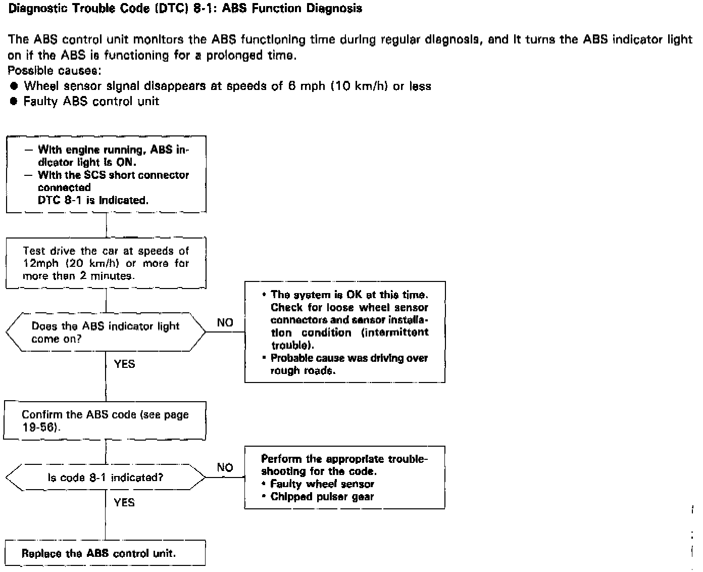

DTC 8-1

Diagnostic Trouble Code (DTC) 8-1: ABS Function Diagnosis
The ABS control unit monitors the ABS functioning time during regular diagnosis, and it turns the ABS indicator light on if the ABS is functioning for a prolonged time.
Possible causes:
- Wheel sensor signal disappears at speeds of 6 mph (10 km/h) or less
- Faulty ABS control unit